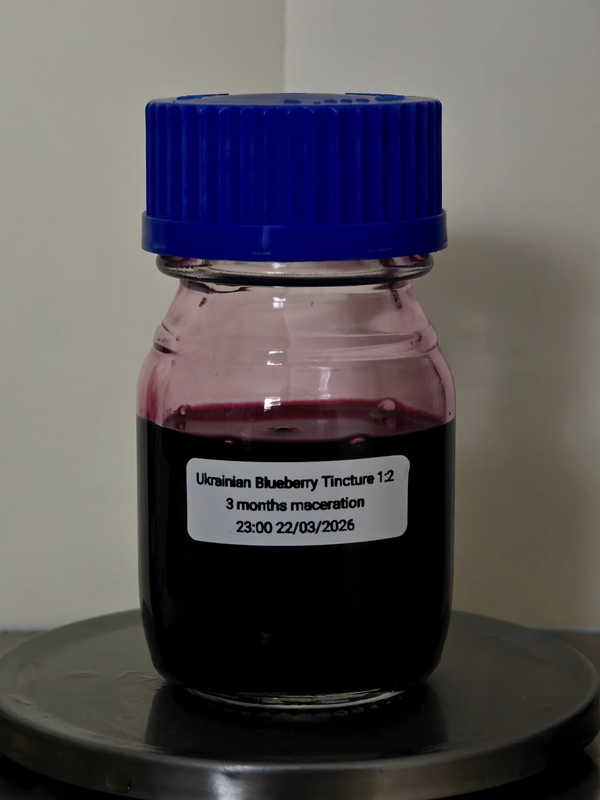

Ukrainian Blueberry Tincture
One of three freeze dried single origin fruits macerated in high quality ethanol to extract it's aromatics and filtered through high-quality paper that captures fines and oily residues.
A 1:2 ratio of fruit to ethanol gives a well extracted and low density tincture that can be used sparingly in any composition as either an addition or a full replacement of the oil dilutant.
Blueberries from Ukraine are tart and refreshing with a tertiary note sweetness, it leans more to the sour berry notes that is revitalising with a rigid character that isn't the usual fleeting blueberry taste.
This purple-gem tincture smells like a cross between green and floral notes; buchu, rose, blackcurrant, tangy blueberries - it has a deep green rose middle with tangy fruits at the top and bottom.